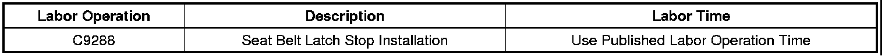

Restraints - Seat Belt Latch Stop Button Availability
INFORMATIONBulletin No.: 07-09-40-002A
Date: June 04, 2009
Subject: Seat Belt Latch Stop Button Available for Service
Models:
2005-2010 GM Passenger Cars and Light Duty Trucks (Including Saturn)
2005-2010 HUMMER H2
2006-2010 HUMMER H3
2009-2010 HUMMER H3T
Supercede:
This bulletin is being revised to update the models and model years. Please discard Corporate Bulletin Number 07-09-40-002 (Section 09 - Restraints).
All seat belt retractor assemblies contain a stop button. If a stop button becomes damaged, the button can be replaced by ordering a replacement button through the GM Parts Catalog. The seat belt retractor assembly does not need replacement.
Refer to the Seat Belt Latch Stop Installation procedure in SI for the complete installation procedure.
Parts Information
For part numbers, usage and availability of stop buttons, see Stop Kit in Group 14.875 (cars) or Group 16.714 (trucks) of the appropriate Parts Catalog. Saturn retailers should refer to the appropriate model year Parts & Illustration Catalog for the vehicle.
Warranty Information

For vehicles repaired under warranty, use the table above.

Disclaimer